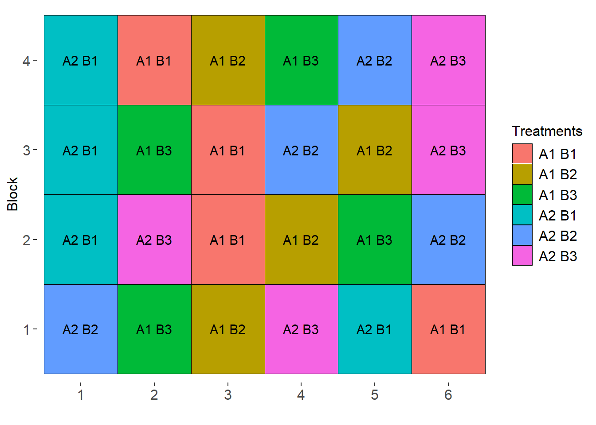

library(tidyverse)
library(metan) # estatísticas descritivas
library(rio) # importação/exportação de dados
library(emmeans) # comparação de médias
library(AgroR) # casualização e ANOVA9. Experimentos Fatoriais
Pacotes
Experimentos fatoriais
Experimentos fatoriais são muito comuns nas ciências agrárias, pois permitem o estudo de dois ou mais fatores em um mesmo experimento. Diversas são as vantagens em se conduzir um experimento deste tipo. Dentre elas, podemos citar a redução de custos, quando comparado à realizar um experimento para cada fator, a otimização da área experimental e dos tratos culturais, bem como a possibilidade de identificar o efeito de dois ou mais fatores sobre a magnitude da variável resposta. Esta é, talvez, a principal vantagem destes experimentos. Ao memo tempo, no entanto, é a fonte de um dos maiores desafios encontrados no meio acadêmico. O surgimento de uma terceira fonte de variação, conhecida por interação.
Casualização
Delineamento Inteiramente Casualizado
sketch(trat= c("A1", "A2"),
trat1 = c("B1", "B2", "B3"),
design = "FAT2DIC",
r = 4)
Delineamento de Blocos Casualizados
sketch(trat= c("A1", "A2"),
trat1 = c("B1", "B2", "B3"),
design = "FAT2DBC",
r = 4)
Tipos de interação
Ausência de interação
# sem interação
dfsi <- tribble(
~GEN, ~FONTEN, ~RG,
"Híbrido 1","Ureia", 5.7,
"Híbrido 1","Nitrato", 6.8,
"Híbrido 2","Ureia", 8.2,
"Híbrido 2","Nitrato", 9.3)
p1 <-
plot_factbars(dfsi, GEN, FONTEN, resp = RG,
ylab = expression(paste("RG (Mg ",ha^-1, ")")),
y.expand = 0.2,
size.text = 16,
values = TRUE,
errorbar = F,
xlab = "Híbrido",
legend.position = c(0.2, 0.89)) +
ggtitle("Ausência de interação")Warning in qt(level/2 + 0.5, n() - 1): NaNs produzidos
Warning in qt(level/2 + 0.5, n() - 1): NaNs produzidos
Warning in qt(level/2 + 0.5, n() - 1): NaNs produzidos
Warning in qt(level/2 + 0.5, n() - 1): NaNs produzidosp1De posse dos dados, vamos construir uma tabela dupla entrada com os valores totais e outra com os valores médios. Os efeitos da interação são calculados como…
mat_dfsi <- make_mat(dfsi, GEN, FONTEN, RG)
mat_dfsi Nitrato Ureia
Híbrido 1 6.8 5.7
Híbrido 2 9.3 8.2# tabela dupla entrada (totais)
mat_dfsi |>
row_col_sum() Nitrato Ureia row_sums
Híbrido 1 6.8 5.7 12.5
Híbrido 2 9.3 8.2 17.5
col_sums 16.1 13.9 30.0# tabela dupla entrada (totais)
mat_dfsi |>
row_col_mean() Nitrato Ureia row_means
Híbrido 1 6.80 5.70 6.25
Híbrido 2 9.30 8.20 8.75
col_means 8.05 6.95 7.50# soma de quadrados do fator GEN
rowSums(mat_dfsi) ^ 2Híbrido 1 Híbrido 2
156.25 306.25 modsi <- aov(RG ~ GEN * FONTEN, data = dfsi)
summary(modsi) Df Sum Sq Mean Sq
GEN 1 6.25 6.25
FONTEN 1 1.21 1.21
GEN:FONTEN 1 0.00 0.00Interação simples (quantitativa)
# interação simples
df_is <- tribble(
~GEN, ~FONTEN, ~RG,
"Híbrido 1","Ureia", 4.5,
"Híbrido 1","Nitrato", 1.9,
"Híbrido 2","Ureia", 11,
"Híbrido 2","Nitrato", 5.3)
p2 <-
plot_factbars(df_is, GEN, FONTEN, resp = RG,
ylab = expression(paste("RG (Mg ",ha^-1, ")")),
y.expand = 0.2,
size.text = 16,
errorbar = F,
values = TRUE,
xlab = "Híbrido",
legend.position = c(0.2, 0.89)) +
ggtitle("Interação simples")Warning in qt(level/2 + 0.5, n() - 1): NaNs produzidos
Warning in qt(level/2 + 0.5, n() - 1): NaNs produzidos
Warning in qt(level/2 + 0.5, n() - 1): NaNs produzidos
Warning in qt(level/2 + 0.5, n() - 1): NaNs produzidosp2
Interação complexa (qualitativa)
# interação complexa
df_ic <- tribble(
~GEN, ~FONTEN, ~RG,
"Híbrido 1","Ureia", 4.1,
"Híbrido 1","Nitrato", 1.4,
"Híbrido 2","Ureia", 6.2,
"Híbrido 2","Nitrato", 8.4)
p3 <-
plot_factbars(df_ic, GEN, FONTEN, resp = RG,
ylab = expression(paste("RG (Mg ",ha^-1, ")")),
y.expand = 0.2,
size.text = 16,
errorbar = F,
values = TRUE,
xlab = "Híbrido",
legend.position = c(0.2, 0.89)) +
ggtitle("Interação complexa")Warning in qt(level/2 + 0.5, n() - 1): NaNs produzidos
Warning in qt(level/2 + 0.5, n() - 1): NaNs produzidos
Warning in qt(level/2 + 0.5, n() - 1): NaNs produzidos
Warning in qt(level/2 + 0.5, n() - 1): NaNs produzidosp3
Modelo estatístico
Vamos considerar como exemplo, um experimento que avaliou a influencia de dois fatores, digamos \(\alpha\) e \(\tau\), em uma determinada variável resposta. O modelo estatístico considerado neste tipo de experimento é:
\[ {y_{ijk}} = {\rm{ }}\mu {\rm{ }} + {\rm{ }}\mathop \beta \nolimits_{k} + \mathop \alpha \nolimits_i + \mathop \tau \nolimits_j + \mathop {(\alpha \tau )}\nolimits_{ij} + {\rm{ }}\mathop \varepsilon \nolimits_{ijk} \]
onde \({y_{ijk}}\) é o valor observado da combinação do i-ésimo nível do fator \(\alpha\) com o j-ésimo nível do fator \(\tau\) no k-ésimo bloco; \(\mu\) é a média geral; \(\mathop \beta \nolimits_{k}\) é o efeito do bloco k; \(\mathop \alpha \nolimits_i\) é o efeito do i-ésimo nível de \(\alpha\) ; \(\mathop \tau \nolimits_j\) é o efeito do j-ésimo nível de \(\tau\) ; \(\mathop {(\alpha \tau )}\nolimits_{ij}\) é o efeito da interação do i-ésimo nível de \(\alpha\) com o j-ésimo nível de \(\tau\); e \(\mathop \varepsilon \nolimits_{ijk}\) é o erro aleatório associado a \({y_{ijk}}\), assumindo \(\mathop \varepsilon \nolimits_{ijk} \mathop \cap \limits^{iid} N(0,\mathop \sigma \nolimits^2 )\).
Basicamente, estes fatores podem ser divididos em dois tipos: qualitativos e quantitativos. Um fator qualitativo é, como o nome já diz, relacionado a qualidade, ou seja, diferentes em tipo, mas não em quantidade. Como exemplo, podemos citar cultivares, defensivos agrícolas, práticas de manejo, etc. Um fator quantitativo, por outro lado, é caracterizado pela quantidade utilizada no experimento. Podemos citar, por exemplo, doses de adubação. Cabe ressaltar que o termo fatorial não indica um delineamento experimental, mas uma forma de arranjo de tratamentos na área parcela. Estes experimentos podem ser conduzidos tanto em DIC quanto DBC. Assim, em cada repetição/bloco, o tratamento a ser aplicado é a combinação dos níveis dos dois fatores.
Conjunto de dados
O conjunto de dados utilizado neste exemplo é adaptado de OLIVOTO et al. (2016) sendo oriundo de um experimento que testou o efeito de diferentes parcelamentos de nitrogênio (N) associado ao uso de enxofre (S) na produtividade, componentes do rendimento e qualidade reológica da farinha de trigo.
OLIVOTO, T. et al. Sulfur and nitrogen effects on industrial quality and grain yield of wheat. Revista de Ciências Agroveterinárias, v. 15, n. 1, p. 24–33, 2016. Disponível em: https://doi.org/10.5965/223811711512016024
Os tratamentos consistiram da combinação de três níveis de parcelamento de N (DA: 100% no duplo anel; AF+DA: 50% no afilhamento + 50% no duplo anel; DA+ES: 50% no afilhamento + 50% no espigamento) e dois níveis de enxofre (S+: com enxofre; S-: sem enxofre).
Para fins didáticos, a extensibilidade da massa (L, mm) é utilizada. Para importação, utiliza-se a função import() do pacote rio. A função as_factor converte as primeiras três colunas para fator.
url <- "https://bit.ly/df_biostat"
df_fat <-
import(url, sheet = "FAT1_CI2", setclass = "tbl") |>
as_factor(1:3)No seguinte gráfico, apresento as médias observadas da extensibilidade nos diferentes tratamentos.
plot_factbars(df_fat, ENX, NIT, resp = L)
Verificação de outliers
A função inspect do pacote metan é utilizada para inspecionar o conjunto de dados. Com esta função, é possível identificar possíveis outliers, bem como valores faltantes.
inspect(df_fat, plot = TRUE)
## # A tibble: 4 × 10
## Variable Class Missing Levels Valid_n Min Median Max Outlier Text
## <chr> <chr> <chr> <chr> <int> <dbl> <dbl> <dbl> <dbl> <lgl>
## 1 ENX factor No 2 24 NA NA NA NA NA
## 2 NIT factor No 3 24 NA NA NA NA NA
## 3 REP factor No 4 24 NA NA NA NA NA
## 4 L numeric No - 24 67 78.5 96 0 NAEstatística descritiva
A função desc_stat() do pacote metan computa estatísticas descritivas para a variável L.
desc_stat(df_fat)
## # A tibble: 1 × 10
## variable cv max mean median min sd.amo se ci.t n.valid
## <chr> <dbl> <dbl> <dbl> <dbl> <dbl> <dbl> <dbl> <dbl> <dbl>
## 1 L 10.5 96 80.4 78.5 67 8.43 1.72 3.56 24Análise de variância
Manual
mat_df_fat <- make_mat(df_fat, ENX, NIT, L, fun = sum)
mat_df_fat AF+DA DA DA+ES
S- 297 316 310
S+ 286 373 347# total dos blocos
tbloco <- sum_by(df_fat, REP) |> pull()
I <- nlevels(df_fat$ENX)
J <- nlevels(df_fat$NIT)
K <- nlevels(df_fat$REP)
# fator de correção
C <- sum(df_fat$L) ^ 2 / (I*J*K)
# soma de quadrado total
sqtot <- sum(df_fat$L ^ 2) - C
# soma de quadrado de bloco
sqbloco <- sum(tbloco ^ 2) / (I*J) - C
# soma de quadrados de ENX (a)
sqa <- sum(rowSums(mat_df_fat) ^ 2) / (J * K) - C
# soma de quadrados de NIT (b)
sqb <- sum(colSums(mat_df_fat) ^ 2) / (I * K) - C
# soma de quadrados da interação (a x b)
sqab <- sum(mat_df_fat ^ 2) / K - C - sqa - sqb
# soma de quadrado do erro
sqerr <- sqtot - sqa - sqb - sqab - sqbloco
# montar a tabela
FV <- c("BLOCO", "ENX", "NIT", "ENX*NIT", "ERRO", "TOTAL")
GL <- c(3, 1, 2, 2, 15, 23)
SQ <- c(sqbloco, sqa, sqb, sqab, sqerr, sqtot)
QM <- SQ / GL
FC <- QM / QM[5]
FC[5:6] <- NA
data.frame(FV = FV, GL = GL, SQ = SQ, QM = QM, FC = FC) FV GL SQ QM FC
1 BLOCO 3 10.45833 3.486111 0.1779889
2 ENX 1 287.04167 287.041667 14.6553680
3 NIT 2 739.00000 369.500000 18.8654092
4 ENX*NIT 2 305.33333 152.666667 7.7946391
5 ERRO 15 293.79167 19.586111 NA
6 TOTAL 23 1635.62500 71.114130 NAA análise de variância é computada no software R utilizando a função aov(). Considerando o Delineamento de Blocos Casualizados (DBC), as três fontes de variação incluídas no modelo são a de enxofre (ENX), nitrogênio (NIT) e bloco (REP). Note que todos os termos (efeito principal e interação) podem ser declarados quando se utiliza ENX*NIT; também é possível indicar termos específicos no modelo.
# opção 1
anova <- aov(L ~ ENX*NIT + REP, data = df_fat)
# modelo idêntico, indicando os termos explicitamente
anova <- aov(L ~ ENX + NIT + ENX:NIT + REP, data = df_fat)
summary(anova)
## Df Sum Sq Mean Sq F value Pr(>F)
## ENX 1 287.0 287.0 14.655 0.00165 **
## NIT 2 739.0 369.5 18.865 8.04e-05 ***
## REP 3 10.5 3.5 0.178 0.90965
## ENX:NIT 2 305.3 152.7 7.795 0.00477 **
## Residuals 15 293.8 19.6
## ---
## Signif. codes: 0 '***' 0.001 '**' 0.01 '*' 0.05 '.' 0.1 ' ' 1Comparação de médias
A análise de variância revelou efeito significativo da interação. Nesse caso, segue-se comparando as médias do fator nitrogênio dentro de cada nível do fator enxofre e do enxofre dentro de cada nível do fator nitrogênio. Para isso, utilizo o pacote emmeans (teste Tukey). Nesta abordagem, a avaliação da significância das médias de dois tratamentos é dada pela sobreposição das flechas de cada tratamento. Se dois tratamentos apresentam setas que se sobrepõem (considerando o eixo x), assume-se que estes tratamentos são estatisticamente diferentes um do outro.
medias_fat <- emmeans(anova, ~ NIT | ENX)
plot(medias_fat,
CIs = FALSE, # remove os intervalos de confiança das médias
comparisons = TRUE) # insere setas para comparação de médias (Tukey)
Pacote AgroR
No pacote agroR, a análise de variância neste delineamento pode ser realizada com a função FAT2DBC().
with(df_fat,
FAT2DBC(ENX, NIT, REP, L))
##
## -----------------------------------------------------------------
## Normality of errors
## -----------------------------------------------------------------
## Method Statistic p.value
## Shapiro-Wilk normality test(W) 0.922206 0.06536118
##
##
## -----------------------------------------------------------------
## Homogeneity of Variances
## -----------------------------------------------------------------
## Method Statistic p.value
## Bartlett test(Bartlett's K-squared) 2.459752 0.782544
##
##
## -----------------------------------------------------------------
## Independence from errors
## -----------------------------------------------------------------
## Method Statistic p.value
## Durbin-Watson test(DW) 1.682362 0.04036279
##
##
## -----------------------------------------------------------------
## Additional Information
## -----------------------------------------------------------------
##
## CV (%) = 5.51
## Mean = 80.375
## Median = 78.5
## Possible outliers = No discrepant point
##
## -----------------------------------------------------------------
## Analysis of Variance
## -----------------------------------------------------------------
## Df Sum Sq Mean.Sq F value Pr(F)
## Fator1 1 287.04167 287.041667 14.6553680 1.645485e-03
## Fator2 2 739.00000 369.500000 18.8654092 8.038974e-05
## bloco 3 10.45833 3.486111 0.1779889 9.096501e-01
## Fator1:Fator2 2 305.33333 152.666667 7.7946391 4.774361e-03
## Residuals 15 293.79167 19.586111
##
## -----------------------------------------------------------------
##
## Significant interaction: analyzing the interaction
##
## -----------------------------------------------------------------
##
## -----------------------------------------------------------------
## Analyzing F1 inside of each level of F2
## -----------------------------------------------------------------
## Df Sum Sq Mean Sq F value Pr(>F)
## bloco 3 10.46 3.49 0.1780 0.9096501
## Fator2 2 739.00 369.50 18.8654 8.039e-05 ***
## Fator2:Fator1 3 592.38 197.46 10.0815 0.0006909 ***
## Fator2:Fator1: AF+DA 1 15.13 15.13 0.7722 0.3933874
## Fator2:Fator1: DA 1 406.12 406.12 20.7354 0.0003805 ***
## Fator2:Fator1: DA+ES 1 171.12 171.12 8.7371 0.0098160 **
## Residuals 15 293.79 19.59
## ---
## Signif. codes: 0 '***' 0.001 '**' 0.01 '*' 0.05 '.' 0.1 ' ' 1
##
## -----------------------------------------------------------------
## Analyzing F2 inside of the level of F1
## -----------------------------------------------------------------
##
## Df Sum Sq Mean Sq F value Pr(>F)
## bloco 3 10.46 3.49 0.1780 0.909650
## Fator1 1 287.04 287.04 14.6554 0.001645 **
## Fator1:Fator2 4 1044.33 261.08 13.3300 7.897e-05 ***
## Fator1:Fator2: S- 2 47.17 23.58 1.2041 0.327368
## Fator1:Fator2: S+ 2 997.17 498.58 25.4560 1.508e-05 ***
## Residuals 15 293.79 19.59
## ---
## Signif. codes: 0 '***' 0.001 '**' 0.01 '*' 0.05 '.' 0.1 ' ' 1
##
## -----------------------------------------------------------------
## Final table
## -----------------------------------------------------------------
## AF+DA DA DA+ES
## S- 74.2 aA 79.0 bA 77.5 bA
## S+ 71.5 aB 93.2 aA 86.8 aAParcelas subdivididas
Experimentos fatoriais são úteis devido a possibilidade de se testar dois ou mais fatores em um mesmo experimento. Uma desvantagem deste tipo de experimento é que cada bloco deve receber todos os tratamentos, ou seja, todas as combinações dos níveis dos dois fatores. Assim, o número de parcelas no experimento e consequentemente o tamanho da área experimental crese drastricamente na medida em que são incluídos fatores ou níveis de fatores no experimento. Uma maneira de se contornar isto, é a condução de experimentos em parcelas subdivididas.
Parcelas subdivididas são um caso especial de estrutura de tratamentos fatorial em que um fator é alocado na parcela principal e outro fator é alocado na subparcela. Este tipo de estrutura de tratamentos pode ser utilizada quando um fator é de dificil instalação em pequenas parcelas, como por exemplo, a semeadura mecanizada ou um sistema de irrigação, e o segundo fator pode ser alocado em parcelas mais pequenas, como um doses de nitrogênio, por exemplo.
Diferentemente do modelo fatorial tradicional, o modelo estatístico para análise de experimentos em parcelas subdivididas conta com mais uma fonte de variação. Vamos considerar como exemplo, um experimento que avaliou a influência de dois fatores, digamos \(\alpha\) e \(\tau\), em uma determinada variável resposta, agora, conduzido em parcelas subivididas, onde o fator \(\alpha\) foi alocado na parcela principal e o fator \(\tau\) alocado na subparcela. O modelo estatístico considerado neste tipo de experimento é:
\[ {y_{ijk}} = {\rm{ }}\mu {\rm{ }} + {\rm{ }}\mathop \alpha \nolimits_i + \mathop \beta \nolimits_{k} + \mathop \eta \nolimits_{ik} +\mathop \tau \nolimits_j + \mathop {(\alpha \tau )}\nolimits_{ij} + {\rm{ }}\mathop \varepsilon \nolimits_{ijk} \]
onde \({y_{ijk}}\) é a variável resposta observada; \(\mu\) é a média geral; \(\mathop \alpha \nolimits_i\) é o efeito do i-ésimo nível de \(\alpha\) ; \(\mathop \beta \nolimits_{k}\) é o efeito do bloco k; \(\mathop \eta \nolimits_{ik}\) é o erro de parcela, mais conhecido como erro a; assumido \(\mathop \varepsilon \nolimits_{ijk} \mathop \cap \limits^{iid} N(0,\mathop \sigma \nolimits_\eta^2 )\); \(\mathop \tau \nolimits_j\) é o efeito do j-ésimo nível de \(\tau\) ; \(\mathop {(\alpha \tau )}\nolimits_{ij}\) é o efeito da interação do i-ésimo nível de \(\alpha\) com o j-ésimo nível de \(\tau\); e \(\mathop \varepsilon \nolimits_{ijk}\) é o erro da subparcela, mais conhecido como erro b, assumindo \(\mathop \varepsilon \nolimits_{ijk} \mathop \cap \limits^{iid} N(0,\mathop \sigma \nolimits^2 )\).
Casualização
sketch(trat= c("A1", "A2"),
trat1 = c("B1", "B2", "B3"),
design = "PSUBDBC",
r = 4)
Análise de variância
Considerando o mesmo conjunto de dados do exemplo anterior e assumindo que o enxofre estava casualizado nas parcelas principais e o nitrogênio nas subparcelas, a análise de variância no software R é computada conforme segue
anova_psub <- aov(L ~ ENX*NIT + Error(REP/ENX), data = df_fat)
summary(anova_psub)
Error: REP
Df Sum Sq Mean Sq F value Pr(>F)
Residuals 3 10.46 3.486
Error: REP:ENX
Df Sum Sq Mean Sq F value Pr(>F)
ENX 1 287.04 287.04 18.94 0.0224 *
Residuals 3 45.46 15.15
---
Signif. codes: 0 '***' 0.001 '**' 0.01 '*' 0.05 '.' 0.1 ' ' 1
Error: Within
Df Sum Sq Mean Sq F value Pr(>F)
NIT 2 739.0 369.5 17.855 0.000253 ***
ENX:NIT 2 305.3 152.7 7.377 0.008142 **
Residuals 12 248.3 20.7
---
Signif. codes: 0 '***' 0.001 '**' 0.01 '*' 0.05 '.' 0.1 ' ' 1Pacote AgroR
No pacote agroR, a análise de variância neste delineamento pode ser realizada com a função PSUBDBC().
with(df_fat,
PSUBDBC(ENX, NIT, REP, L))
##
## -----------------------------------------------------------------
## Normality of errors
## -----------------------------------------------------------------
## Method Statistic p.value
## Shapiro-Wilk normality test(W) 0.922206 0.06536118
##
##
##
## -----------------------------------------------------------------
## Homogeneity of Variances
## -----------------------------------------------------------------
## Plot
## Method Statistic p.value
## Bartlett test(Bartlett's K-squared) 0.6768708 0.4106663
##
##
## ----------------------------------------------------
## Split-plot
## Method Statistic p.value
## Bartlett test(Bartlett's K-squared) 1.817323 0.4030634
##
##
## ----------------------------------------------------
## Interaction
## Method Statistic p.value
## Bartlett test(Bartlett's K-squared) 2.459752 0.782544
##
##
## -----------------------------------------------------------------
## Additional Information
## -----------------------------------------------------------------
##
## CV1 (%) = 4.84
## CV2 (%) = 5.66
## Mean = 80.375
## Median = 78.5
##
## -----------------------------------------------------------------
## Analysis of Variance
## -----------------------------------------------------------------
## Df Sum Sq Mean Sq F value Pr(>F)
## F1 1 287.04167 287.041667 18.9431714 0.022
## Block 3 10.45833 3.486111 0.2300642 0.871
## Error A 3 45.45833 15.152778
## F2 2 739.00000 369.500000 17.8550336 p<0.001
## F1 x F2 2 305.33333 152.666667 7.3771812 0.008
## Error B 12 248.33333 20.694444
## -----------------------------------------------------------------
## Significant interaction: analyzing the interaction
## -----------------------------------------------------------------
## Analyzing F1 inside of each level of F2
## -----------------------------------------------------------------
## GL SQ QM Fc p.value
## F1 : F2 AF+DA 1.00000 15.1250 15.12500 0.802506 0.384898
## F1 : F2 DA 1.00000 406.1250 406.12500 21.548268 0.000343
## F1 : F2 DA+ES 1.00000 171.1250 171.12500 9.079587 0.008963
## Combined error 14.57876 274.7691 18.84722
##
## -----------------------------------------------------------------
## Analyzing F2 inside of the level of F1
## -----------------------------------------------------------------
## GL SQ QM Fc p.value
## F2 : F1 S- 2 47.16667 23.58333 1.139597 0.352262
## F2 : F1 S+ 2 997.16667 498.58333 24.092617 6.3e-05
## Error b 12 248.33333 20.69444
##
## -----------------------------------------------------------------
## Final table
## -----------------------------------------------------------------
## AF+DA DA DA+ES
## S- 74.2 aA 79.0 bA 77.5 bA
## S+ 71.5 aB 93.2 aA 86.8 aAExemplos de experimentos fatoriais
Coberturas de solo e doses de nitrogênio (efeito na massa de cobertura de inverno)
O delineamento experimental utilizado foi o delineamento de blocos casualizados com parcelas subdivididas em esquema fatorial 4x2 com quatro repetições. quatro espécies: aveia preta cv. BRS 139 (Neblina), com densidade de 120 kg ha\(^{-1}\) de semente; triticale cv. BRS SATURNO, com densidade de 160 kg ha\(^{-1}\) de semente e centeio cv. BRS PROGRESSO, com densidade de 160 kg ha\(^{-1}\) de semente, além do pousio, com presença de diferentes plantas que se desenvolvem nesta época (três espécies de gramíneas); com dois manejos de nitrogênio (com ou sem N em cobertuta). Os tratamentos foram alocados na área experimental em formato de parcelas subdivididas. Na parcela principal foram alocadas as espécies nas subparcela o manejo de nitrogênio. Nas parcelas que receberam N utilizou-se como fonte a ureia (45% de N) na dose de 100 kg ha\(^{-1}\).
Pacotes e dados
Assumindo que todos estão instalados, é só carregar com
library(rio) # importar e exportar arquivos
library(ExpDes.pt) # fazer anova
library(metan) # gráficos
library(tidyverse) # manipulação de dados e gráficos
# dados
url <- "https://bit.ly/df_biostat"
df_cobmassa <- import(url, sheet = "COBERTURA_N_MASSA", setclass = "tbl")
df_cobmassa <- as_factor(df_cobmassa, 1:3)
# Apenas para mostrar a estrutura dos dados
df_cobmassa# A tibble: 32 × 6
NITROGENIO ESPECIE REP MV MS MSR
<fct> <fct> <fct> <dbl> <dbl> <dbl>
1 Sem N Aveia Preta 1 17939. 3640. 53.2
2 Sem N Aveia Preta 2 20738. 4190. 709.
3 Sem N Aveia Preta 3 37780 6958. 688
4 Sem N Aveia Preta 4 15448 3055. 98
5 Sem N Centeio 1 30836. 7001. 347.
6 Sem N Centeio 2 22246 5540 246.
7 Sem N Centeio 3 12422 3330. 169.
8 Sem N Centeio 4 15220. 3797. 213.
9 Sem N Triticale 1 14700. 2989. 268.
10 Sem N Triticale 2 19146. 3652. 399.
# … with 22 more rowsEstatistica descritiva
desc_stat(df_cobmassa, stats = c("min, mean, max"))# A tibble: 3 × 4
variable min mean max
<chr> <dbl> <dbl> <dbl>
1 MS 1576. 5053. 7573.
2 MSR 53.2 373. 738
3 MV 6413. 25210. 45076.ANOVA
O modelo considerado para este exemplo de parcela subdivididas é o seguinte
\[ {y_{ijk}} = {\rm{ }}\mu {\rm{ }} + {\rm{ }}\mathop \alpha \nolimits_i + \mathop \beta \nolimits_{k} + \mathop \eta \nolimits_{ik} +\mathop \tau \nolimits_j + \mathop {(\alpha \tau )}\nolimits_{ij} + {\rm{ }}\mathop \varepsilon \nolimits_{ijk} \]
onde \({y_{ijk}}\) é a variável resposta observada; \(\mu\) é a média geral; \(\mathop \alpha \nolimits_i\) é o efeito do \(i\)-ésimo nível do fator espécie de cobertura ; \(\mathop \beta \nolimits_{k}\) é o efeito do bloco \(k\); \(\mathop \eta \nolimits_{ik}\) é o erro de parcela, mais conhecido como erro a; \(\mathop \tau \nolimits_j\) é o efeito do \(j\)-ésimo nível do fator nitrogênio; \(\mathop {(\alpha \tau )}\nolimits_{ij}\) é o efeito da interação do \(i\)-ésimo nível do fator espécie com o \(j\)-ésimo nível do fator nitrogênio; e \(\mathop \varepsilon \nolimits_{ijk}\) é o erro da subparcela, mais conhecido como erro b.
Massa verde (MV) por ha
ANOVA
with(df_cobmassa,
psub2.dbc(fator1 = ESPECIE,
fator2 = NITROGENIO,
bloco = REP,
resp = MV,
fac.names = c("ESPECIE", "NITROGENIO"))
)------------------------------------------------------------------------
Legenda:
FATOR 1 (parcela): ESPECIE
FATOR 2 (subparcela): NITROGENIO
------------------------------------------------------------------------
------------------------------------------------------------------------
Quadro da analise de variancia
------------------------------------------------------------------------
GL SQ QM Fc Pr(>Fc)
ESPECIE 3 416543558 138847853 1.2283 0.354965
Bloco 3 77123097 25707699 0.2274 0.875004
Erro a 9 1017377902 113041989
NITROGENIO 1 743336547 743336547 20.7774 0.000657 ***
ESPECIE*NITROGENIO 3 86334790 28778264 0.8044 0.515204
Erro b 12 429314110 35776176
Total 31 2770030005
---
Signif. codes: 0 '***' 0.001 '**' 0.01 '*' 0.05 '.' 0.1 ' ' 1
------------------------------------------------------------------------
CV 1 = 42.17338 %
CV 2 = 23.72551 %
Interacao nao significativa: analisando os efeitos simples
------------------------------------------------------------------------
ESPECIE
De acordo com o teste F, as medias desse fator sao estatisticamente iguais.
------------------------------------------------------------------------
Niveis Medias
1 Aveia Preta 30469.15
2 Centeio 24084.35
3 Pousio 20441.70
4 Triticale 25846.80
------------------------------------------------------------------------
NITROGENIO
Teste de Tukey
------------------------------------------------------------------------
Grupos Tratamentos Medias
a Com N 30030.17
b Sem N 20390.83
------------------------------------------------------------------------GRÁFICO
Como somente foi observado efeito significativo para o fator nitrogênio, prossegue-se com a comparação de médias para o efeito de N, conforme resultado do Teste Tukey acima. Neste gráfico, as barras mostram a média e as barras de erro, o erro padrão da média. Apenas para apresentação, incluo também a média do fator cobertura de solo, sem as letras pois o seu efeito não foi significativo, segundo a ANOVA.
pn_mv <-
plot_bars(df_cobmassa,
x = NITROGENIO,
y = MV,
lab.bar = c("a", "b"),
xlab = "Aplicação de Nitrogênio (N)",
ylab = "Matéria verde (kg/ha)")
pcob_mv <-
plot_bars(df_cobmassa,
x = ESPECIE,
y = MV,
xlab = "Espécies",
ylab = "Matéria verde (kg/ha)") +
geom_hline(yintercept = mean(df_cobmassa$MV))
# organiza os gráficos
arrange_ggplot(pn_mv, pcob_mv)Massa seca (MS) por ha
ANOVA
with(df_cobmassa,
psub2.dbc(fator1 = ESPECIE,
fator2 = NITROGENIO,
bloco = REP,
resp = MS,
fac.names = c("ESPECIE", "NITROGENIO"))
)------------------------------------------------------------------------
Legenda:
FATOR 1 (parcela): ESPECIE
FATOR 2 (subparcela): NITROGENIO
------------------------------------------------------------------------
------------------------------------------------------------------------
Quadro da analise de variancia
------------------------------------------------------------------------
GL SQ QM Fc Pr(>Fc)
ESPECIE 3 11614132 3871377 1.0190 0.42877
Bloco 3 1466451 488817 0.1287 0.94066
Erro a 9 34191281 3799031
NITROGENIO 1 14139498 14139498 8.1851 0.01433 *
ESPECIE*NITROGENIO 3 1476172 492057 0.2848 0.83542
Erro b 12 20729720 1727477
Total 31 83617255
---
Signif. codes: 0 '***' 0.001 '**' 0.01 '*' 0.05 '.' 0.1 ' ' 1
------------------------------------------------------------------------
CV 1 = 38.57428 %
CV 2 = 26.01163 %
Interacao nao significativa: analisando os efeitos simples
------------------------------------------------------------------------
ESPECIE
De acordo com o teste F, as medias desse fator sao estatisticamente iguais.
------------------------------------------------------------------------
Niveis Medias
1 Aveia Preta 5402.25
2 Centeio 5647.55
3 Pousio 4065.85
4 Triticale 5095.85
------------------------------------------------------------------------
NITROGENIO
Teste de Tukey
------------------------------------------------------------------------
Grupos Tratamentos Medias
a Com N 5717.6
b Sem N 4388.15
------------------------------------------------------------------------GRÁFICO
Como somente foi observado efeito significativo para o fator nitrogênio, prossegue-se com a comparação de médias para o efeito de N, conforme resultado do Teste Tukey acima. Apenas para apresentação, incluo também a média do fator cobertura de solo, sem as letras pois o seu efeito não foi significativo, segundo a ANOVA.
pn_ms <-
plot_bars(df_cobmassa,
x = NITROGENIO,
y = MS,
lab.bar = c("a", "b"),
xlab = "Aplicação de Nitrogênio (N)",
ylab = "Matéria seca (kg/ha)")
pcob_ms <-
plot_bars(df_cobmassa,
x = ESPECIE,
y = MS,
xlab = "Espécies",
ylab = "Matéria seca (kg/ha)") +
geom_hline(yintercept = mean(df_cobmassa$MS))
# organiza os gráficos
arrange_ggplot(pn_ms, pcob_ms)
Massa seca de raiz (MSR) por ha
ANOVA
with(df_cobmassa,
psub2.dbc(fator1 = ESPECIE,
fator2 = NITROGENIO,
bloco = REP,
resp = MSR,
fac.names = c("ESPECIE", "NITROGENIO"))
)------------------------------------------------------------------------
Legenda:
FATOR 1 (parcela): ESPECIE
FATOR 2 (subparcela): NITROGENIO
------------------------------------------------------------------------
------------------------------------------------------------------------
Quadro da analise de variancia
------------------------------------------------------------------------
GL SQ QM Fc Pr(>Fc)
ESPECIE 3 160868 53623 0.9543 0.454941
Bloco 3 217735 72578 1.2916 0.335534
Erro a 9 505724 56192
NITROGENIO 1 141512 141512 21.4205 0.000582 ***
ESPECIE*NITROGENIO 3 44728 14909 2.2568 0.134138
Erro b 12 79277 6606
Total 31 1149844
---
Signif. codes: 0 '***' 0.001 '**' 0.01 '*' 0.05 '.' 0.1 ' ' 1
------------------------------------------------------------------------
CV 1 = 63.48783 %
CV 2 = 21.76891 %
Interacao nao significativa: analisando os efeitos simples
------------------------------------------------------------------------
ESPECIE
De acordo com o teste F, as medias desse fator sao estatisticamente iguais.
------------------------------------------------------------------------
Niveis Medias
1 Aveia Preta 405.7
2 Centeio 365.6
3 Pousio 264.4
4 Triticale 457.8
------------------------------------------------------------------------
NITROGENIO
Teste de Tukey
------------------------------------------------------------------------
Grupos Tratamentos Medias
a Com N 439.875
b Sem N 306.875
------------------------------------------------------------------------GRÁFICO
Como somente foi observado efeito significativo para o fator nitrogênio, prossegue-se com a comparação de médias para o efeito de N, conforme resultado do Teste Tukey acima. Apenas para apresentação, incluo também a média do fator cobertura de solo, sem as letras pois o seu efeito não foi significativo, segundo a ANOVA.
pn_msr <-
plot_bars(df_cobmassa,
x = NITROGENIO,
y = MSR,
lab.bar = c("a", "b"),
xlab = "Aplicação de Nitrogênio (N)",
ylab = "Massa seca de raiz (kg/ha)")
pcob_msr <-
plot_bars(df_cobmassa,
x = ESPECIE,
y = MSR,
xlab = "Espécies",
ylab = "Massa seca de raiz (kg/ha)") +
geom_hline(yintercept = mean(df_cobmassa$MSR))
# organiza os gráficos
arrange_ggplot(pn_msr, pcob_msr)Coberturas de solo e doses de nitrogênio (efeito na cultura da soja)
Os tratamentos e delineamentos são descritos no exemplo anterior. Aqui, são analisados os dados observados na cultura da soja, semeada na resteva de cada tratamento (combinação de N e espécies de cobertura)
Pacotes e dados
Assumindo que todos estão instalados, é só carregar com
library(rio) # importar e exportar arquivos
library(ExpDes.pt) # fazer anova
library(metan) # gráficos
library(tidyverse) # manipulação de dados e gráficos
# dados
url <- "https://bit.ly/df_biostat"
df_cobsoja <- import(url, sheet = "COBERTURA_N_SOJA", setclass = "tbl")
df_cobsoja <- as_factor(df_cobsoja, 1:3)
# Apenas para mostrar a estrutura dos dados
df_cobsoja# A tibble: 32 × 7
ESPECIE NITROGENIO REP NL NGL MMG RG
<fct> <fct> <fct> <dbl> <dbl> <dbl> <dbl>
1 Aveia Preta Sem N R1 30 2.25 180 3547.
2 Aveia Preta Sem N R2 40.8 2.55 190 4117.
3 Aveia Preta Sem N R3 34.6 2.6 170 3381.
4 Aveia Preta Sem N R4 37.6 2.52 160 3733.
5 Centeio Sem N R1 38.6 2.15 180 3819.
6 Centeio Sem N R2 40.6 2.1 170 1739.
7 Centeio Sem N R3 37.6 2.48 180 3928.
8 Centeio Sem N R4 38 2.39 150 3339.
9 Triticale Sem N R1 35.6 2.46 210 4400
10 Triticale Sem N R2 32.2 2.42 200 4378.
# … with 22 more rowsEstatistica descritiva
desc_stat(df_cobsoja, stats = c("min, mean, max"))# A tibble: 4 × 4
variable min mean max
<chr> <dbl> <dbl> <dbl>
1 MMG 150 178. 210
2 NGL 1.97 2.43 2.82
3 NL 22.6 38.6 53.2
4 RG 675 3288. 4861. ANOVA
O modelo considerado é descrito no exemplo anterior.
Variável número de legumes por planta (NL)
ANOVA
with(df_cobsoja,
fat2.dbc(fator1 = ESPECIE,
fator2 = NITROGENIO,
bloco = REP,
resp = NL,
fac.names = c("ESPECIE", "NITROGENIO"))
)------------------------------------------------------------------------
Legenda:
FATOR 1: ESPECIE
FATOR 2: NITROGENIO
------------------------------------------------------------------------
Quadro da analise de variancia
------------------------------------------------------------------------
GL SQ QM Fc Pr>Fc
Bloco 3 18.72 6 0.1640 0.91940
ESPECIE 3 148.99 5 1.3051 0.29904
NITROGENIO 1 2.76 3 0.0726 0.79027
ESPECIE*NITROGENIO 3 430.67 2 3.7724 0.02607
Residuo 21 799.15 4
Total 31 1400.30 1
------------------------------------------------------------------------
CV = 16 %
------------------------------------------------------------------------
Teste de normalidade dos residuos (Shapiro-Wilk)
valor-p: 0.5520582
De acordo com o teste de Shapiro-Wilk a 5% de significancia, os residuos podem ser considerados normais.
------------------------------------------------------------------------
Interacao significativa: desdobrando a interacao
------------------------------------------------------------------------
Desdobrando ESPECIE dentro de cada nivel de NITROGENIO
------------------------------------------------------------------------
------------------------------------------------------------------------
Quadro da analise de variancia
------------------------------------------------------------------------
GL SQ QM Fc Pr.Fc
Bloco 3 18.72375 6.24125 0.164 0.9194
NITROGENIO 1 2.76125 2.76125 0.0726 0.7903
ESPECIE:NITROGENIO Com N 3 513.04000 171.01333 4.4939 0.0138
ESPECIE:NITROGENIO Sem N 3 66.62750 22.20917 0.5836 0.6323
Residuo 21 799.14625 38.05458
Total 31 1400.29875 45.17093
------------------------------------------------------------------------
ESPECIE dentro do nivel Com N de NITROGENIO
------------------------------------------------------------------------
Teste de Tukey
------------------------------------------------------------------------
Grupos Tratamentos Medias
a 1 44.65
a 2 43.55
ab 4 36.55
b 3 30.65
------------------------------------------------------------------------
ESPECIE dentro do nivel Sem N de NITROGENIO
De acordo com o teste F, as medias desse fator sao estatisticamente iguais.
------------------------------------------------------------------------
Niveis Medias
1 1 35.75
2 2 38.70
3 3 41.30
4 4 37.30
------------------------------------------------------------------------
Desdobrando NITROGENIO dentro de cada nivel de ESPECIE
------------------------------------------------------------------------
------------------------------------------------------------------------
Quadro da analise de variancia
------------------------------------------------------------------------
GL SQ QM Fc Pr.Fc
Bloco 3 18.72375 6.24125 0.164 0.9194
ESPECIE 3 148.99375 49.66458 1.3051 0.299
NITROGENIO:ESPECIE Aveia Preta 1 158.42000 158.42000 4.163 0.0541
NITROGENIO:ESPECIE Centeio 1 47.04500 47.04500 1.2363 0.2788
NITROGENIO:ESPECIE Pousio 1 226.84500 226.84500 5.961 0.0236
NITROGENIO:ESPECIE Triticale 1 1.12500 1.12500 0.0296 0.8651
Residuo 21 799.14625 38.05458
Total 31 1400.29875 45.17093
------------------------------------------------------------------------
NITROGENIO dentro do nivel Aveia Preta de ESPECIE
De acordo com o teste F, as medias desse fator sao estatisticamente iguais.
------------------------------------------------------------------------
Niveis Medias
1 1 44.65
2 2 35.75
------------------------------------------------------------------------
NITROGENIO dentro do nivel Centeio de ESPECIE
De acordo com o teste F, as medias desse fator sao estatisticamente iguais.
------------------------------------------------------------------------
Niveis Medias
1 1 43.55
2 2 38.70
------------------------------------------------------------------------
NITROGENIO dentro do nivel Pousio de ESPECIE
------------------------------------------------------------------------
Teste de Tukey
------------------------------------------------------------------------
Grupos Tratamentos Medias
a 2 41.3
b 1 30.65
------------------------------------------------------------------------
NITROGENIO dentro do nivel Triticale de ESPECIE
De acordo com o teste F, as medias desse fator sao estatisticamente iguais.
------------------------------------------------------------------------
Niveis Medias
1 1 36.55
2 2 37.30
------------------------------------------------------------------------GRÁFICO
Como não a houve diferença para os efeitos principais (ESPECIE E NITROGÊNIO) mas deu interação entre estes fatores, vamos apresentar um gráfico mostrando essa interação. No gráfico, letras maiúsculas comparam as espécies dentro de cada manejo de N e minúsculas comparam o manejo de N dentro de cada espécie. As barras mostram a média e as barras de erro, o erro padrão da média.
plot_factbars(df_cobsoja, ESPECIE, NITROGENIO,
resp = NL,
lab.bar = c("Aa", "Aa", "Aa", "Aa", "Bb", "Aa", "ABa", "Aa"),
y.expand = 0.1,
xlab = "Espécie",
ylab = "Número de legumes por planta")
Variável número de grãos por legume (NGL)
ANOVA
with(df_cobsoja,
fat2.dbc(fator1 = ESPECIE,
fator2 = NITROGENIO,
bloco = REP,
resp = NGL,
fac.names = c("ESPECIE", "NITROGENIO"))
)------------------------------------------------------------------------
Legenda:
FATOR 1: ESPECIE
FATOR 2: NITROGENIO
------------------------------------------------------------------------
Quadro da analise de variancia
------------------------------------------------------------------------
GL SQ QM Fc Pr>Fc
Bloco 3 0.19640 5 2.3475 0.101764
ESPECIE 3 0.14872 4 1.7776 0.182257
NITROGENIO 1 0.08405 6 3.0138 0.097208
ESPECIE*NITROGENIO 3 0.14872 3 1.7776 0.182257
Residuo 21 0.58565 2
Total 31 1.16355 1
------------------------------------------------------------------------
CV = 6.88 %
------------------------------------------------------------------------
Teste de normalidade dos residuos (Shapiro-Wilk)
valor-p: 0.3640228
De acordo com o teste de Shapiro-Wilk a 5% de significancia, os residuos podem ser considerados normais.
------------------------------------------------------------------------
Interacao nao significativa: analisando os efeitos simples
------------------------------------------------------------------------
ESPECIE
De acordo com o teste F, as medias desse fator sao estatisticamente iguais.
------------------------------------------------------------------------
Niveis Medias
1 Aveia Preta 2.42250
2 Centeio 2.32875
3 Pousio 2.44375
4 Triticale 2.52000
------------------------------------------------------------------------
NITROGENIO
De acordo com o teste F, as medias desse fator sao estatisticamente iguais.
------------------------------------------------------------------------
Niveis Medias
1 Com N 2.4800
2 Sem N 2.3775
------------------------------------------------------------------------COMO NÃO DEU DIFERENÇA SIGNIFICATIVA PARA NENHUM FATOR, PODE-SE APENAS APRESENTAR O GRÁFICO, MAS SEM DISCUTIR DIFERENÇAS ENTRE OS TRATAMENTOS/N
plot_factbars(df_cobsoja, ESPECIE, NITROGENIO,
resp = NGL,
y.expand = 0.1,
xlab = "Espécie",
ylab = "Número de grãos por legume")
Variável massa de mil grãos (MMG)
ANOVA
with(df_cobsoja,
fat2.dbc(fator1 = ESPECIE,
fator2 = NITROGENIO,
bloco = REP,
resp = MMG,
fac.names = c("ESPECIE", "NITROGENIO"))
)------------------------------------------------------------------------
Legenda:
FATOR 1: ESPECIE
FATOR 2: NITROGENIO
------------------------------------------------------------------------
Quadro da analise de variancia
------------------------------------------------------------------------
GL SQ QM Fc Pr>Fc
Bloco 3 3409.4 2 6.5107 0.00275
ESPECIE 3 1309.4 5 2.5004 0.08733
NITROGENIO 1 28.1 4 0.1611 0.69218
ESPECIE*NITROGENIO 3 209.4 6 0.3998 0.75454
Residuo 21 3665.6 3
Total 31 8621.9 1
------------------------------------------------------------------------
CV = 7.4 %
------------------------------------------------------------------------
Teste de normalidade dos residuos (Shapiro-Wilk)
valor-p: 0.858878
De acordo com o teste de Shapiro-Wilk a 5% de significancia, os residuos podem ser considerados normais.
------------------------------------------------------------------------
Interacao nao significativa: analisando os efeitos simples
------------------------------------------------------------------------
ESPECIE
De acordo com o teste F, as medias desse fator sao estatisticamente iguais.
------------------------------------------------------------------------
Niveis Medias
1 Aveia Preta 176.25
2 Centeio 171.25
3 Pousio 188.75
4 Triticale 177.50
------------------------------------------------------------------------
NITROGENIO
De acordo com o teste F, as medias desse fator sao estatisticamente iguais.
------------------------------------------------------------------------
Niveis Medias
1 Com N 177.500
2 Sem N 179.375
------------------------------------------------------------------------COMO NÃO DEU DIFERENÇA SIGNIFICATIVA PARA NENHUM FATOR, PODE-SE APENAS APRESENTAR O GRÁFICO, MAS SEM DISCUTIR DIFERENÇAS ENTRE OS TRATAMENTOS/N
plot_factbars(df_cobsoja, ESPECIE, NITROGENIO,
resp = MMG,
y.expand = 0.1,
xlab = "Espécie",
ylab = "Massa de mil grãos (g)")
Variável RG
ANOVA
with(df_cobsoja,
fat2.dbc(fator1 = ESPECIE,
fator2 = NITROGENIO,
bloco = REP,
resp = RG,
fac.names = c("ESPECIE", "NITROGENIO"))
)------------------------------------------------------------------------
Legenda:
FATOR 1: ESPECIE
FATOR 2: NITROGENIO
------------------------------------------------------------------------
Quadro da analise de variancia
------------------------------------------------------------------------
GL SQ QM Fc Pr>Fc
Bloco 3 9602221 4 1.97873 0.14806
ESPECIE 3 219192 6 0.04517 0.98689
NITROGENIO 1 461200 5 0.28512 0.59897
ESPECIE*NITROGENIO 3 3950128 2 0.81400 0.50045
Residuo 21 33969089 3
Total 31 48201830 1
------------------------------------------------------------------------
CV = 38.68 %
------------------------------------------------------------------------
Teste de normalidade dos residuos (Shapiro-Wilk)
valor-p: 0.1875762
De acordo com o teste de Shapiro-Wilk a 5% de significancia, os residuos podem ser considerados normais.
------------------------------------------------------------------------
Interacao nao significativa: analisando os efeitos simples
------------------------------------------------------------------------
ESPECIE
De acordo com o teste F, as medias desse fator sao estatisticamente iguais.
------------------------------------------------------------------------
Niveis Medias
1 Aveia Preta 3368.403
2 Centeio 3305.556
3 Pousio 3150.000
4 Triticale 3327.778
------------------------------------------------------------------------
NITROGENIO
De acordo com o teste F, as medias desse fator sao estatisticamente iguais.
------------------------------------------------------------------------
Niveis Medias
1 Com N 3167.882
2 Sem N 3407.986
------------------------------------------------------------------------COMO NÃO DEU DIFERENÇA SIGNIFICATIVA PARA NENHUM FATOR, PODE-SE APENAS APRESENTAR O GRÁFICO, MAS SEM DISCUTIR DIFERENÇAS ENTRE OS TRATAMENTOS/N
plot_factbars(df_cobsoja, ESPECIE, NITROGENIO,
resp = RG,
y.expand = 0.1,
xlab = "Espécie",
ylab = "RG (kg/ha)")Doses de Nitrogênio x híbridos de milho
Sem interação significativa
O conjunto de dados utilizado neste exemplo será o FAT2_SI. Como já de conhecimento prévio, a interação não é significativa neste exemplo.
library(rio) # importar e exportar arquivos
library(ExpDes.pt) # fazer anova
library(metan) # gráficos
library(tidyverse) # manipulação de dados e gráficos
# dados
url <- "https://bit.ly/df_biostat"
FAT2_SI <- import(url, sheet = "FAT2_SI", setclass = "tbl")
FAT2_SI# A tibble: 40 × 4
BLOCO HIBRIDO DOSEN RG
<dbl> <chr> <dbl> <dbl>
1 1 NUPEC_1 0 6.9
2 1 NUPEC_1 25 7.44
3 1 NUPEC_1 50 7.65
4 1 NUPEC_1 75 7.5
5 1 NUPEC_1 100 7.03
6 1 NUPEC_2 0 6.68
7 1 NUPEC_2 25 7.14
8 1 NUPEC_2 50 7.26
9 1 NUPEC_2 75 7.03
10 1 NUPEC_2 100 6.69
# … with 30 more rowsA função fat2.rdb()é utilizada neste exemplo. Como o fator DOSEN é quantitativo, precisamos informar isto no argumento quali da função.
with(FAT2_SI,
fat2.dbc(fator1 = HIBRIDO,
fator2 = DOSEN,
bloco = BLOCO,
resp = RG,
quali = c(TRUE, FALSE),
fac.names = c("HIBRIDO", "DOSE")))Como a interação não foi significativa, proceder-se-a a comparação de médias dos dois híbridos considerando a média de todas as doses de nitrogênio, e o ajuste de apenas uma regressão para os dois híbridos. Como o grau do polinômio significativo foi quadrático, declararmos fit = 2 na função plot_lines() do pacote metan.
h <- plot_bars(FAT2_SI, HIBRIDO, RG,
width.bar = 0.5,
lab.bar = c("a", "b"))
d <- plot_lines(FAT2_SI, DOSEN, RG,
fit = 2,
col = FALSE,
xlab = "Doses de nitrogênio",
ylab = "Rendimento de grãos (Mg/ha)") +
geom_text(aes(0, 6.5, label=(paste(expression("y = 6,8326 + 0,0012x - 0,0003x"^2*" R" ^2*" = 0,99 ")))),
hjust = 0,
col = "black",
parse = TRUE)
arrange_ggplot(h, d, tag_levels = list(c("h", "d")), widths = c(1, 3))
Com interação significativa
O conjunto de dados utilizado neste exemplo será o FAT2_CI. Neste exemplo já sabe-se que a interação híbrido x dose de N é significativa.
library(rio) # importar e exportar arquivos
library(ExpDes.pt) # fazer anova
library(metan) # gráficos
library(tidyverse) # manipulação de dados e gráficos
# dados
url <- "https://bit.ly/df_biostat"
FAT2_CI <- import(url, sheet = "FAT2_CI", setclass = "tbl")
FAT2_CI# A tibble: 40 × 4
BLOCO HIBRIDO DOSEN RG
<dbl> <chr> <dbl> <dbl>
1 1 NUPEC_1 0 11.2
2 1 NUPEC_1 25 12.4
3 1 NUPEC_1 50 13
4 1 NUPEC_1 75 12.5
5 1 NUPEC_1 100 11.4
6 1 NUPEC_2 0 9.22
7 1 NUPEC_2 25 9.70
8 1 NUPEC_2 50 10.1
9 1 NUPEC_2 75 10.9
10 1 NUPEC_2 100 11.4
# … with 30 more rowswith(FAT2_CI,
fat2.dbc(fator1 = HIBRIDO,
fator2 = DOSEN,
bloco = BLOCO,
resp = RG,
quali = c(TRUE, FALSE),
fac.names = c("HIBRIDO", "DOSE")))
## ------------------------------------------------------------------------
## Legenda:
## FATOR 1: HIBRIDO
## FATOR 2: DOSE
## ------------------------------------------------------------------------
##
##
## Quadro da analise de variancia
## ------------------------------------------------------------------------
## GL SQ QM Fc Pr>Fc
## Bloco 3 0.119 3 1.29 0.29725
## HIBRIDO 1 40.076 6 1306.48 0.00000
## DOSE 4 8.436 4 68.75 0.00000
## HIBRIDO*DOSE 4 9.814 5 79.98 0.00000
## Residuo 27 0.828 2
## Total 39 59.272 1
## ------------------------------------------------------------------------
## CV = 1.56 %
##
## ------------------------------------------------------------------------
## Teste de normalidade dos residuos (Shapiro-Wilk)
## valor-p: 0.03477145
## ATENCAO: a 5% de significancia, os residuos nao podem ser considerados normais!
## ------------------------------------------------------------------------
##
##
##
## Interacao significativa: desdobrando a interacao
## ------------------------------------------------------------------------
##
## Desdobrando HIBRIDO dentro de cada nivel de DOSE
## ------------------------------------------------------------------------
## ------------------------------------------------------------------------
## Quadro da analise de variancia
## ------------------------------------------------------------------------
## GL SQ QM Fc Pr.Fc
## Bloco 3 0.11891 0.03964 1.2921 0.2972
## DOSE 4 8.43556 2.10889 68.7499 0
## HIBRIDO:DOSE 0 1 11.10618 11.10618 362.0622 0
## HIBRIDO:DOSE 25 1 14.34872 14.34872 467.7692 0
## HIBRIDO:DOSE 50 1 17.81448 17.81448 580.753 0
## HIBRIDO:DOSE 75 1 6.55582 6.55582 213.7201 0
## HIBRIDO:DOSE 100 1 0.06444 0.06444 2.1008 0.1587
## Residuo 27 0.82822 0.03067
## Total 39 59.27234 1.51980
## ------------------------------------------------------------------------
##
##
##
## HIBRIDO dentro do nivel 0 de DOSE
## ------------------------------------------------------------------------
## Teste de Tukey
## ------------------------------------------------------------------------
## Grupos Tratamentos Medias
## a NUPEC_1 11.56
## b NUPEC_2 9.2035
## ------------------------------------------------------------------------
##
##
## HIBRIDO dentro do nivel 25 de DOSE
## ------------------------------------------------------------------------
## Teste de Tukey
## ------------------------------------------------------------------------
## Grupos Tratamentos Medias
## a NUPEC_1 12.595
## b NUPEC_2 9.9165
## ------------------------------------------------------------------------
##
##
## HIBRIDO dentro do nivel 50 de DOSE
## ------------------------------------------------------------------------
## Teste de Tukey
## ------------------------------------------------------------------------
## Grupos Tratamentos Medias
## a NUPEC_1 12.935
## b NUPEC_2 9.9505
## ------------------------------------------------------------------------
##
##
## HIBRIDO dentro do nivel 75 de DOSE
## ------------------------------------------------------------------------
## Teste de Tukey
## ------------------------------------------------------------------------
## Grupos Tratamentos Medias
## a NUPEC_1 12.625
## b NUPEC_2 10.8145
## ------------------------------------------------------------------------
##
##
## HIBRIDO dentro do nivel 100 de DOSE
##
## De acordo com o teste F, as medias desse fator sao estatisticamente iguais.
## ------------------------------------------------------------------------
## Niveis Medias
## 1 NUPEC_1 11.5465
## 2 NUPEC_2 11.3670
## ------------------------------------------------------------------------
##
##
##
## Desdobrando DOSE dentro de cada nivel de HIBRIDO
## ------------------------------------------------------------------------
## ------------------------------------------------------------------------
## Quadro da analise de variancia
## ------------------------------------------------------------------------
## GL SQ QM Fc Pr.Fc
## Bloco 3 0.11891 0.03964 1.2921 0.2972
## HIBRIDO 1 40.07604 40.07604 1306.4809 0
## DOSE:HIBRIDO NUPEC_1 4 6.79944 1.69986 55.4156 0
## DOSE:HIBRIDO NUPEC_2 4 11.44973 2.86243 93.3155 0
## Residuo 27 0.82822 0.03067
## Total 39 59.27234 1.51980
## ------------------------------------------------------------------------
##
##
##
## DOSE dentro do nivel NUPEC_1 de HIBRIDO
## ------------------------------------------------------------------------
## Ajuste de modelos polinomiais de regressao
## ------------------------------------------------------------------------
##
## Modelo Linear
## ==========================================
## Estimativa Erro.padrao tc valor.p
## ------------------------------------------
## b0 12.2517 0.0678 180.6175 0
## b1 0.00001 0.0011 0.0108 0.9914
## ------------------------------------------
##
## R2 do modelo linear
## --------
## 0.000001
## --------
##
## Analise de variancia do modelo linear
## ===================================================
## GL SQ QM Fc valor.p
## ---------------------------------------------------
## Efeito linear 1 0 0 0 0.99144
## Desvios de Regressao 3 6.7994 2.2665 73.89 0
## Residuos 27 0.8282 0.0307
## ---------------------------------------------------
## ------------------------------------------------------------------------
##
## Modelo quadratico
## ==========================================
## Estimativa Erro.padrao tc valor.p
## ------------------------------------------
## b0 11.5550 0.0824 140.2044 0
## b1 0.0557 0.0039 14.2760 0
## b2 -0.0006 0.00004 -14.8843 0
## ------------------------------------------
##
## R2 do modelo quadratico
## --------
## 0.999458
## --------
##
## Analise de variancia do modelo quadratico
## ====================================================
## GL SQ QM Fc valor.p
## ----------------------------------------------------
## Efeito linear 1 0 0 0 0.99144
## Efeito quadratico 1 6.7958 6.7958 221.54 0
## Desvios de Regressao 2 0.0037 0.0018 0.06 0.94178
## Residuos 27 0.8282 0.0307
## ----------------------------------------------------
## ------------------------------------------------------------------------
##
## Modelo cubico
## ==========================================
## Estimativa Erro.padrao tc valor.p
## ------------------------------------------
## b0 11.5623 0.0869 132.9870 0
## b1 0.0536 0.0088 6.0633 0
## b2 -0.0005 0.0002 -2.2190 0.0351
## b3 -0.000000 0 -0.2654 0.7927
## ------------------------------------------
##
## R2 do modelo cubico
## --------
## 0.999775
## --------
##
## Analise de variancia do modelo cubico
## ====================================================
## GL SQ QM Fc valor.p
## ----------------------------------------------------
## Efeito linear 1 0 0 0 0.99144
## Efeito quadratico 1 6.7958 6.7958 221.54 0
## Efeito cubico 1 0.0022 0.0022 0.07 0.79271
## Desvios de Regressao 1 0.0015 0.0015 0.05 0.82509
## Residuos 27 0.8282 0.0307
## ----------------------------------------------------
## ------------------------------------------------------------------------
##
##
## DOSE dentro do nivel NUPEC_2 de HIBRIDO
## ------------------------------------------------------------------------
## Ajuste de modelos polinomiais de regressao
## ------------------------------------------------------------------------
##
## Modelo Linear
## ==========================================
## Estimativa Erro.padrao tc valor.p
## ------------------------------------------
## b0 9.2054 0.0678 135.7082 0
## b1 0.0209 0.0011 18.8680 0
## ------------------------------------------
##
## R2 do modelo linear
## --------
## 0.953756
## --------
##
## Analise de variancia do modelo linear
## ====================================================
## GL SQ QM Fc valor.p
## ----------------------------------------------------
## Efeito linear 1 10.9202 10.9202 356 0
## Desvios de Regressao 3 0.5295 0.1765 5.75 0.00354
## Residuos 27 0.8282 0.0307
## ----------------------------------------------------
## ------------------------------------------------------------------------
##
## Modelo quadratico
## ==========================================
## Estimativa Erro.padrao tc valor.p
## ------------------------------------------
## b0 9.2781 0.0824 112.5776 0
## b1 0.0151 0.0039 3.8624 0.0006
## b2 0.0001 0.00004 1.5534 0.1320
## ------------------------------------------
##
## R2 do modelo quadratico
## --------
## 0.960221
## --------
##
## Analise de variancia do modelo quadratico
## ====================================================
## GL SQ QM Fc valor.p
## ----------------------------------------------------
## Efeito linear 1 10.9202 10.9202 356 0
## Efeito quadratico 1 0.0740 0.0740 2.41 0.13196
## Desvios de Regressao 2 0.4555 0.2277 7.42 0.0027
## Residuos 27 0.8282 0.0307
## ----------------------------------------------------
## ------------------------------------------------------------------------
##
## Modelo cubico
## ==========================================
## Estimativa Erro.padrao tc valor.p
## ------------------------------------------
## b0 9.2414 0.0869 106.2918 0
## b1 0.0256 0.0088 2.8956 0.0074
## b2 -0.0002 0.0002 -1.0496 0.3032
## b3 0.000002 0 1.3271 0.1956
## ------------------------------------------
##
## R2 do modelo cubico
## --------
## 0.964939
## --------
##
## Analise de variancia do modelo cubico
## =====================================================
## GL SQ QM Fc valor.p
## -----------------------------------------------------
## Efeito linear 1 10.9202 10.9202 356 0
## Efeito quadratico 1 0.0740 0.0740 2.41 0.13196
## Efeito cubico 1 0.0540 0.0540 1.76 0.1956
## Desvios de Regressao 1 0.4014 0.4014 13.09 0.00121
## Residuos 27 0.8282 0.0307
## -----------------------------------------------------
## ------------------------------------------------------------------------A análise de indicou efeitos significativos tanto para os efeitos principais, quanto para a interação. Assim, as análises complementares realizadas foram (i) a comparação das médias pelo teste Tukey em cada nível da dose de N; e (ii) uma regressão polinomial ajustada para cada híbrido. Por padrão, o máximo grau do polinômio ajustado é 3 (modelo cúbico).
- Comparação das médias dos híbridos em cada dose de nitrogênio.
As comparações de médias são apresentadas como saída da função fat2.dbc() após a análise de variância. Neste momento, utilizaremos a função plot_factbars() pacote metan** para plotar as médias dos híbridos em cada dose de nitrogênio. A apresentação gráfica de resultados, mesmo considerando médias, é uma alternativa interessante à tabela, pois permite uma interpretação mais clara e intuitiva dos resultados.
plot_factbars(FAT2_CI, DOSEN, HIBRIDO,
resp = RG,
xlab = "Doses de nitrogênio",
ylab = expression(paste("Rendimento de grãos (Mg ha"^-1,")")),
palette = "Greys",
lab.bar = c("a", "b", # 0
"a", "b", # 25
"a", "b", # 50
"a", "b", # 75
"a", "a")) # 100
- Ajuste de regressão para cada híbrido
No exemplo anterior, apresentamos as médias dos híbridos em cada dose de nitrogênio. Agora, criaremos um gráfico com o grau do polinômio significativo ajustado de cada híbrido. O grau a ser ajustado deve ser identificado na saída da ANOVA . Para fins didáticos apresento as equações que serão utilizadas.
NUPEC_1: modelo quadrático \(y = 11,555 + 0,05575\times x -0,0005574\times x^2, R^2 = 0.999\)
NUPEC_2: modelo linear \(y = 9,2054 + 0,0209\times x, R^2 = 0.986\)
Utilizando uma equação, é possível estimar a produtividade para uma dose de nitrogênio específica não testada, desde que ela esteja dentro do intervalo estudado. Para isto, basta substituir o x na equação pela dose a ser testada. Por exemplo, para estimar qual seria a produtividade do híbrido NUPEC_2 se tivéssemos aplicado 60 kg de N ha\(^{-1}\) basta resolver: \(y = 9,2054 + 0,0209\times 60\), resultando em \(y \approx 10.5\) Mg ha\(^{-1}\). A interpretação deste resultado, no entanto, deve ser cautelosa. Inconscientemente, concluiríamos que a produtividade do híbrido aumentaria 0,0209 Mg ha\(^{-1}\) a cada kg de nitrogênio aplicado por hectare. Este fato, no entanto, não é observado na prática. Por exemplo, a produtividade não irá aumentar infinitamente a medida em que se aumenta a dose de nitrogênio aplicado. A única conclusão válida, neste caso, é que a produtividade aumenta linearmente até 100 kg de N ha\(^{-1}\). Este resultado se deu em virtude de as doses testadas não terem sido o suficiente para identificar um outro comportamento na variável testada. Nestes casos, indica-se para estudos futuros aumentar o número de doses. Quando não se conhece o intervalo de dose em que a variável em estudo apresenta uma resposta explicável, estudos pilotos podem ser realizados. Neste caso, testar-se-iam o mesmo número de tratamentos (número de doses), no entanto com um intervalo maior entre as doses (por exemplo, 0, 100, 200, 300 e 400 kg de N ha\(^{-1}\). Possivelmente, nesta amplitude, o comportamento da produtividade não seria linear, pois em uma determinada dose, a produtividade estabilizaria.
O ponto em X (dose) em que a produtividade é máxima é chamado de máxima eficiência técnica (MET) e pode ser estimado por:
\[ MET = \frac{{ - {\beta _1}}}{{2 \times {\beta _2}}} \]
Substituindo com os parâmetros estimados, temos:
\[ MET = \frac{{ - 0,05575}}{{2 \times -0,0005574}} = 50 \]
x_met <- -0.05575 / (2 * -0.0005574)
x_met[1] 50.00897Logo, a dose que proporciona a máxima produtividade para o híbrido NUPEC_1 é aproximadamente 50 kg de N ha\(^{-1}\). Assim para sabermos qual é esta produtividade estimada, basta substituir o x da equação por 50, resultando em \(y_{máx}\) = 12,949 Mg ha\(^{-1}\).
y_met <- 11.555 + 0.05575 * 50 - 0.0005574 * 50^2Outro ponto importante que é possível de estimar utilizando uma equação de segundo grau, é a máxima eficiência econômica (MEE), ou seja, a dose máxima, neste caso de nitrogênio, em que é possível aplicar obtendo-se lucro. Este ponto é importante, pois a partir de uma certa dose, os incrementos em produtividade não compensariam o preço pago pelo nitrogênio aplicado. Este ponto pode ser facilmente estimado por:
\[ MEE = MET + \frac{u}{{2 \times \beta_2 \times m}} \]
onde u e m são os preços do nitrogênio e do milho em grão, respectivamente, na mesma unidade utilizada para a estimativa da equação (neste caso, preço do nitrogênio por kg e preço do milho por tonelada). Considerando o preço de custo do nitrogênio como R$ 5,00 por kg e o preço de venda do milho a R$ 1300,00 por tonelada, substituindo-se na formula obtém-se:
\[ MEE = 50 + \frac{{5}}{{2 \times (-0,0005574) \times 1300}} \approx 46 \]
Assim, a dose máxima de nitrogênio que em que os incrementos de produtividade são lucrativos é de \(\approx 48\) Kg ha\(^{-1}\).
x_mee <- x_met + (5 / (2 * -0.0005574 * 1300))
x_mee[1] 46.55889# predito na mee
y_mee <- 11.555 + 0.05575 * x_mee - 0.0005574 * x_mee^2
y_mee[1] 12.94237Semelhante ao exemplo das médias nas doses de nitrogênio, utilizaremos a função plot_factlines() para plotar, agora, uma regressão ajustada para cada híbrido. Os argumentos a serem informados são os seguintes: .data, o conjunto de dados (neste caso FAT2_CI); x e y, as colunas dos dados correspondentes aos eixos x e y do gráfico, respectivamente; group a coluna que contém os níveis dos fatores em que as regressões serão ajustadas; fit um vetor de comprimento igual ao número de níveis da coluna informada em group. O número indicado em cada posição do vetor, corresponde ao grau do polinômio ajustado (máximo grau ajustado = 4). Em nosso exemplo, utilizaremos fit = c(2, 1) para ajustar uma regressão quadrática para o híbrido NUPEC_1 e uma regressão linear para o híbrido NUPEC_2.
plot_factlines(FAT2_CI, DOSEN, RG,
group = HIBRIDO,
fit = c(2, 1)) +
# Linhas e ponto da MET
geom_segment(aes(x = x_met,
y = y_met,
xend = x_met,
yend = 8.5),
color = "black",
show.legend = FALSE) +
geom_segment(aes(x = 0,
y = y_met,
xend = x_met,
yend = y_met),
color = "black",
show.legend = FALSE) +
geom_point(aes(x = x_met, y = y_met), shape = 19, size = 3, color = "blue") +
# Linhas e ponto da MEE
geom_segment(aes(x = x_mee,
y = y_mee,
xend = x_mee,
yend = 8.5),
linetype = 2,
color = "black",
show.legend = FALSE) +
geom_segment(aes(x = 0,
y = y_mee,
xend = x_mee,
yend = y_mee),
linetype = 2,
color = "black",
show.legend = FALSE) +
geom_point(aes(x = x_mee, y = y_mee), shape = 17, size = 3, color = "blue") +
# Equações no gráfico
geom_text(aes(0, 11,
label=(
paste(
expression("y = 11.555 + 0.05575x - 0.0005574x"^2*" R" ^2*" = 0,999"))
)
),
hjust = 0,
size = 5,
col = "black",
parse = TRUE) +
geom_text(aes(0, 8.5,
label=(
paste(
expression("y = 9.2054 + 0.0209x R" ^2*" = 0,95"))
)
),
hjust = 0,
size = 5,
col = "black",
parse = TRUE) 
Observando-se a figura acima, é possível identificar o comportamento quadrático da variável resposta do híbrido NUPEC_1. Para este híbrido, houve um incremento positivo na produtividade até um ponto, posteriormente observa-se que a produtividade tendeu a reduzir. Uma explicação biológica para esta redução seria que o excesso de nitrogênio aplicado proporcionou um alto vigor vegetativo as plantas, podendo ter ocorrido competição entre as plantas por água, luz e outros nutrientes, ou até mesmo tombamento das plantas.